Abstract
Decentralized coordination in networked multi-agent systems under partial observability requires agents to exchange information over wireless channels with limited communication resources. Existing multi-agent learning methods largely assume ideal communication, treating message passing as cost-free and excluding channel constraints from the decision-making loop. We propose C3-WM, a communication–control co-adaptive world model framework that couples representation learning with communication scheduling under wireless constraints. C3-WM follows a centralized-training, decentralized-execution paradigm. During offline training, each agent learns a local latent world model based on a joint-embedding predictive architecture, together with a vector-quantized communication model that maps observations to discrete tokens transmitted over the channel. At execution, agents plan by model predictive control entirely in latent space. We conduct several experiments to evaluate the proposed framework in terms of task performance and communication efficiency. Our method outperforms the baselines in task performance across the evaluation settings, requiring no online interaction for learning and substantially reducing communication overhead.
Introduction
The problem
Teams of robots, drones and vehicles must coordinate while each one sees only part of its surroundings. To act well, they need to share what they see. Learned world models let a single agent plan by imagining the outcome of its actions, but in a team, an agent's own view is often not enough to predict what happens next. It needs information from its partners.
Most multi-agent learning methods assume that this information arrives instantly and without errors. Real robot teams communicate over wireless links with limited transmit power, fading and lost packets. A transmitter also rarely knows the current state of the channel, because measuring and reporting it takes time. A method trained with perfect communication therefore does not carry over to a real network.
Our approach
C3-WM couples planning with communication over a realistic wireless channel. Each agent plans its actions with its own latent world model and model predictive control. It sends its partners a compact message of discrete tokens that describes what it sees. A lightweight power-control policy predicts the channel from past measurements and decides whether to transmit and with what power.
At the receiver, the messages enter both the world model and an episodic memory. A learned cost combines the memory with imagined future states to estimate how far the goal is, which lets the planner head toward goals outside the agent's own view.
Contributions
- A formulation of decentralized, world-model-based cooperative control over wireless channels, with physical-layer impairments and communication limits included.
- C3-WM, a communication-aware world model that learns latent dynamics and discrete communication tokens for decentralized control.
- The λ-policy, a power-control policy that estimates the channel-gain distribution from past measurements and sets the transmit power, or skips the transmission, to meet a target reliability without instantaneous channel knowledge.
- A message-conditioned world model and episodic memory that use the received tokens, with a learned cost that guides planning toward goals beyond the agent's view.
- An evaluation on reward-free cooperative navigation in unseen layouts with ray-traced wireless channels: 89.2% success, ahead of offline and online reinforcement-learning baselines, with messages adding 5.9 points. With the λ-policy, success stays close to the ideal channel while using 16% less transmit power than a margin-based policy at the same reliability.
Method
C3-WM is trained offline from a dataset of recorded episodes, with no reward signal and no interaction with the environment. At execution, each agent acts on its own: it encodes its view, sends a message, receives its partners' messages, and plans in latent space. The figure below shows one transmitter and one receiver.

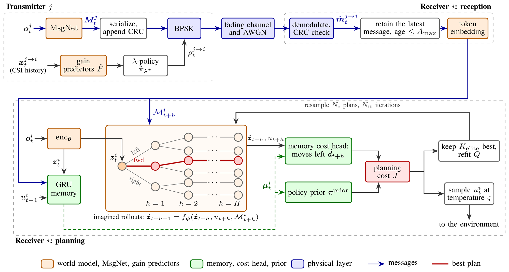
Messages
A VQ-VAE, MsgNet, maps each observation to a grid of codebook indices. Only the indices are transmitted, as a short binary message with an error-detecting code, so a message is a few hundred bits regardless of the image size. The receiver keeps the most recent message from each partner for a few steps.

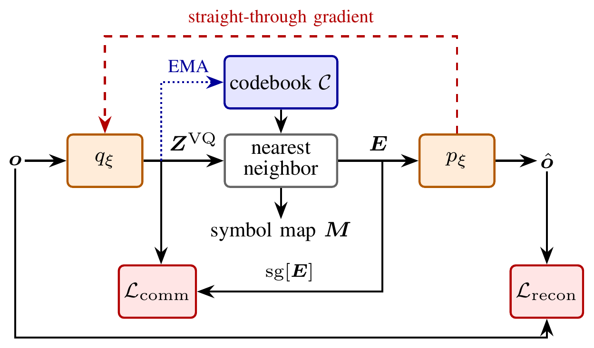
World model
The world model is a joint-embedding predictive architecture: it predicts the next latent state rather than the next image. It is trained in two stages. First, the encoder and a predictor without messages are trained together. Then the predictor is fine-tuned to read the received messages through the message-conditioned block (MCB), which accepts any number of partners with a fixed number of parameters.

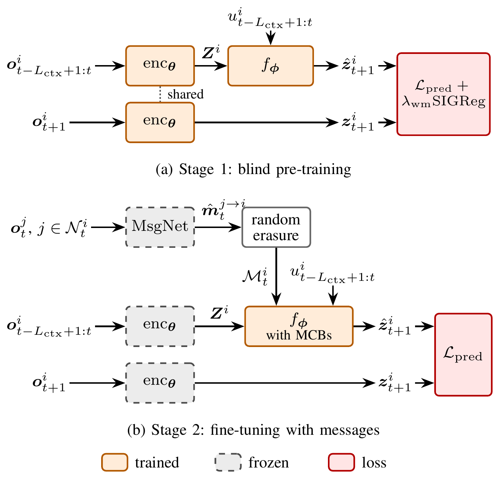

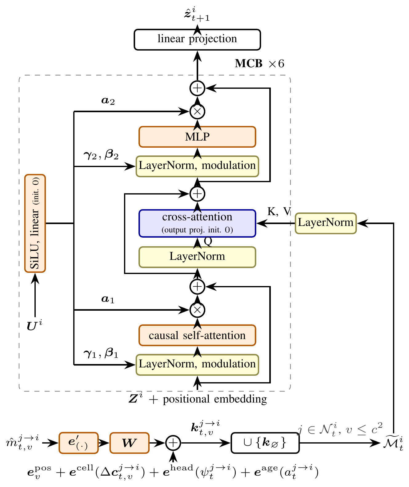
Power control: the λ-policy
Before each transmission, the transmitter predicts the distribution of the channel gain from the recent gains of the link and the agents' positions. The λ-policy then picks the power that best trades transmit power against the probability that the message arrives, with a single multiplier λ setting the trade-off, and it skips the transmission when the link is too weak to serve. The gain distribution is estimated with split conformal prediction, and λ is calibrated on held-out layouts so that the target reliability is met.
Planning
The goal is often outside the agent's view, so each agent keeps an episodic memory of what it has seen and heard, a cost head that predicts the moves left to the goal, and a policy prior. The planner imagines many candidate action sequences with the world model, scores them with these modules, and refines the best ones over several iterations before taking the first action.

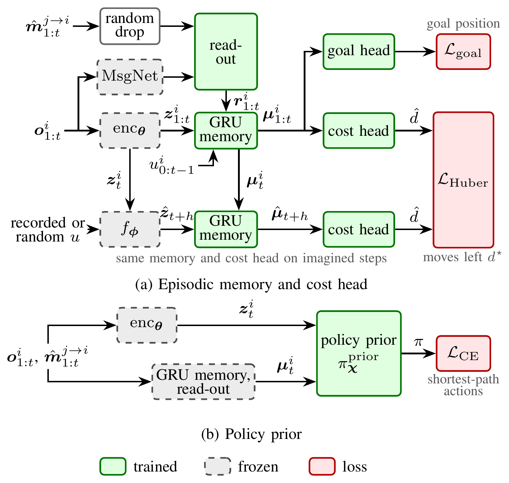
Experimental setup
Environment. FindGoal, a 15 × 15 grid world with two cooperative agents. Each agent sees a 224 × 224 image of the 7 × 7 cells around it and can turn left, turn right, move forward or stay. An episode succeeds when both agents reach the shared goal within 150 steps. C3-WM does not use the environment's reward.
Data. 40 recorded episodes on each of 200 training layouts, 8,000 episodes in total, from a mix of random, shortest-path and waypoint behaviours. Validation uses 60 other layouts, and all results are on 50 test layouts not seen during training.
Channel. Channels are ray-traced with Sionna RT at 2.4 GHz, with 1 m cells and a single omnidirectional antenna per agent, and small-scale Rician fading on top. The target SNR is 10 dB.
Baselines. Offline methods (CommNet, OmniVLA-edge, GCBC, HIQL) and online methods (MAPPO, TarMAC, DreamerV3, CoDreamer, MAMBA), with and without communication. Every method receives each agent's view, position and heading, and an image of the goal, but not the goal's location.
Results
Task performance
All methods are evaluated on the same 1,024 test episodes.
| Method (encoder) | Success within T, perfect channel (%) | Success within 150 (%) | Length | |||
|---|---|---|---|---|---|---|
| T = 50 | T = 100 | T = 150 | λ-link | No messages | ||
| Offline methods | ||||||
| CommNet (ViT) | 27.5 | 50.4 | 60.5 | 63.4 | – | 96.5 |
| OmniVLA-edge (EffNet) | 45.9 | 74.4 | 85.5 | – | – | 70.0 |
| GCBC (CNN) | 37.4 | 60.8 | 70.6 | – | – | 84.4 |
| HIQL (CNN) | 39.8 | 62.1 | 72.1 | – | – | 82.1 |
| Online methods | ||||||
| MAPPO (ViT) | 33.5 | 51.3 | 59.6 | – | – | 92.7 |
| TarMAC (ViT) | 2.2 | 6.5 | 12.0 | 12.4 | – | 142.7 |
| DreamerV3 (CNN) | 2.0 | 5.0 | 20.8 | – | – | 134.8 |
| CoDreamer (CNN) | 0.6 | 0.9 | 7.8 | – | – | 144.4 |
| MAMBA (ViT) | 0.1 | 0.6 | 1.7 | – | – | 149.2 |
| Ours | ||||||
| C3-WM | 80.3 | 86.0 | 89.2 | 88.4 | 83.3 | 41.2 |
Success: all agents reach the goal within T steps. λ-link: messages sent over the wireless link with the λ-policy at a 95% reliability target. Length: mean episode length, with failures counted as 150 steps.

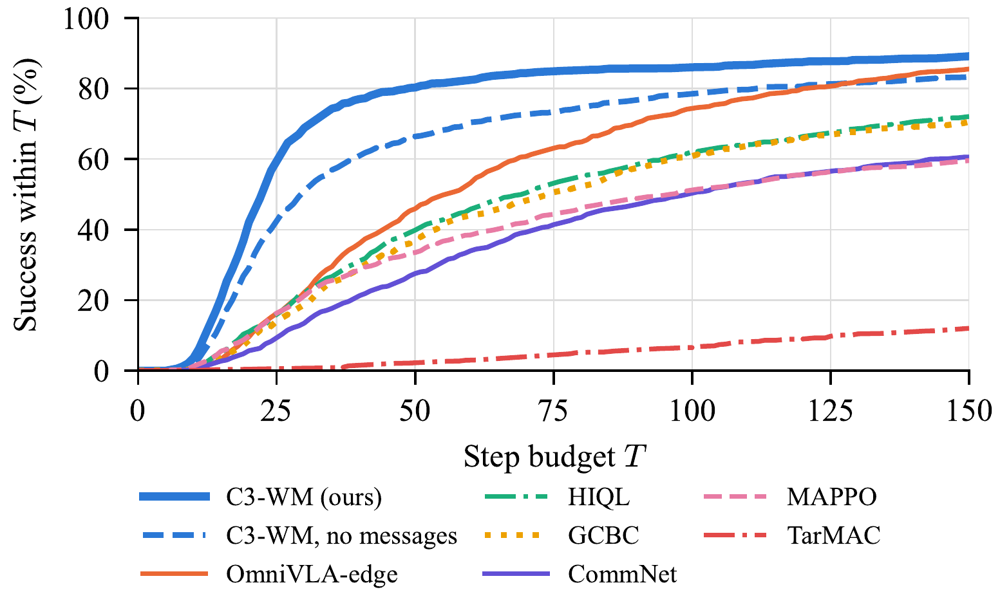
Wireless communication and power control
At a 95% reliability target, the λ-policy uses 2.63 times the power of a transmitter with perfect channel knowledge, against 3.13 and 3.43 times for the margin policy with a mean and a linear gain predictor. It needs only 1.34 times the power of the optimal policy, which knows the true conditional distribution of the channel gain.

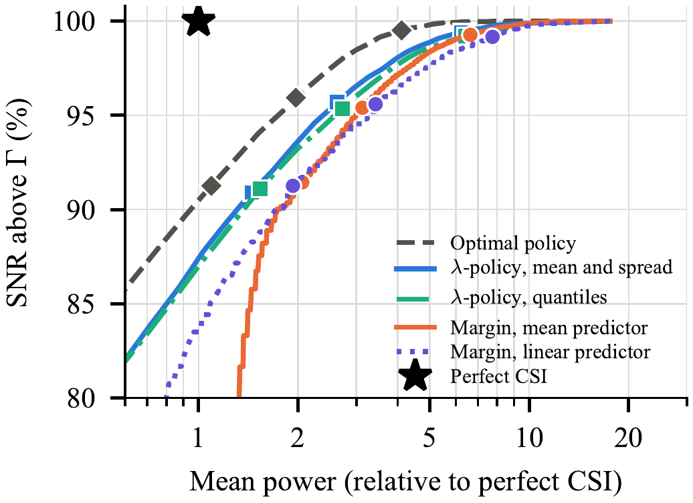

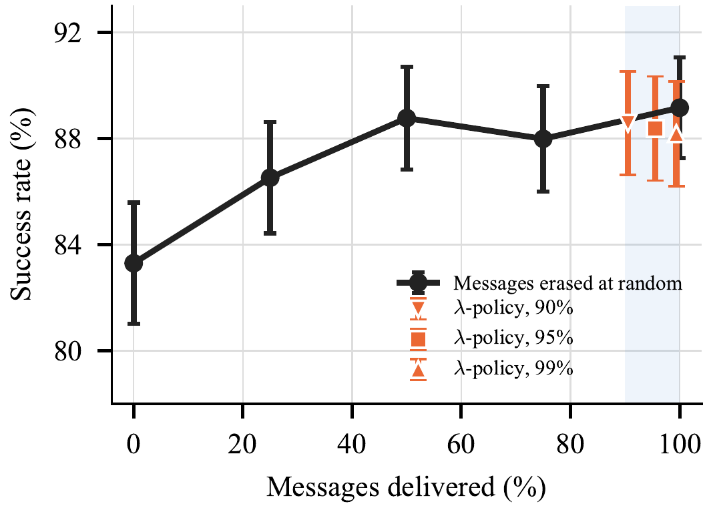

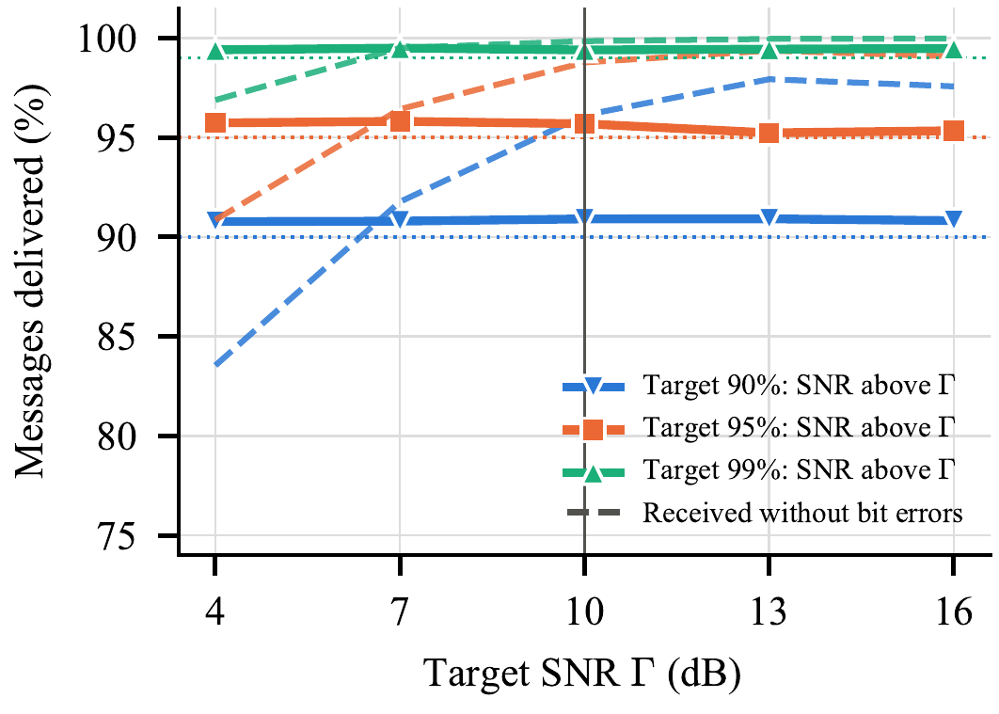
The role of communication
In these episodes, one agent sees the goal first. Its messages reach the other agent before that agent has seen the goal itself, and the other agent heads toward it. Most of this benefit comes through the agent's memory: when only the memory receives messages, the success rate is 88.2%, close to the full method, while messages given only to the predictor leave it at 83.3%, the same as without communication.

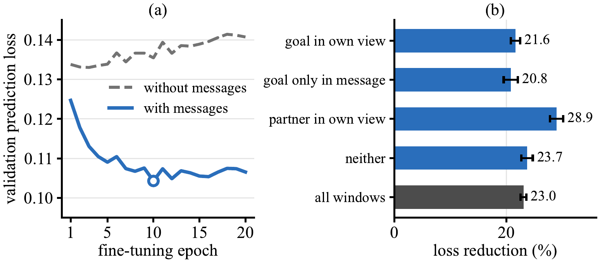

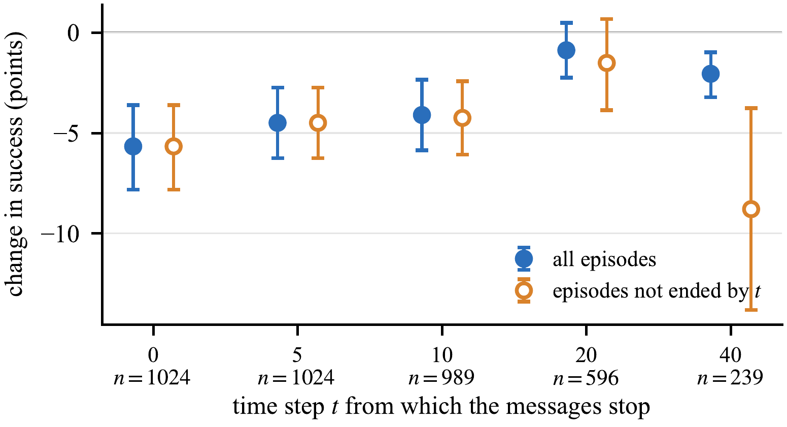
Generalization
The trained models are evaluated without retraining on changes not seen during training: edited layouts, fewer and more walls, changes in the middle of an episode, and larger teams.

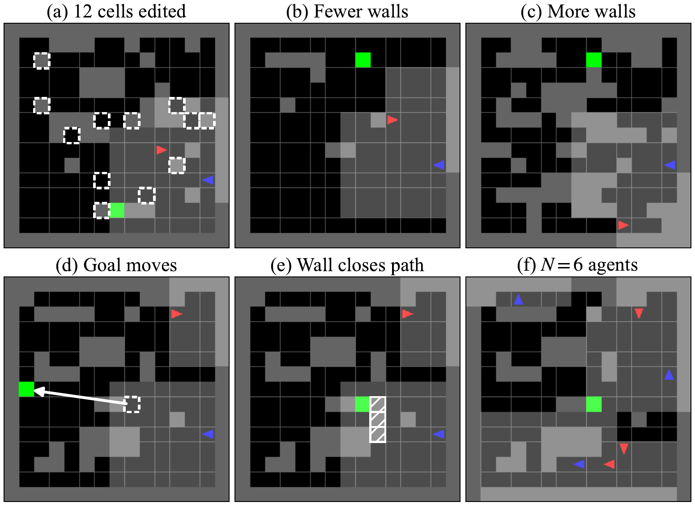
| Change | C3-WM | OmniVLA-edge | TarMAC | ||
|---|---|---|---|---|---|
| No messages | Messages | Gain [95% CI] | |||
| Layouts | |||||
| 3 cells edited | 84.6 | 89.9 | +5.4 [3.2, 7.5] | – | – |
| 12 cells edited | 77.8 | 84.3 | +6.4 [4.3, 8.7] | – | – |
| Test layouts | 83.3 | 89.2 | +5.9 [3.8, 7.9] | 85.5 | 12.0 |
| Fewer walls | 90.8 | 99.1 | +8.3 [6.5, 10.2] | 95.9 | 35.4 |
| More walls | 41.5 | 45.8 | +4.3 [1.7, 7.0] | 40.3 | 0.7 |
| Change during the episode | |||||
| Goal moves, after it is seen | 52.5 | 73.5 | +21.0 [17.6, 24.5] | 78.9 | 7.8 |
| Goal moves at step 20 | 75.5 | 82.9 | +7.4 [4.4, 10.4] | 83.7 | 8.3 |
| Wall closes the path | 56.6 | 59.2 | +2.5 [−0.5, 5.6] | 63.8 | 3.9 |
| Change during the episode, with memory reset | |||||
| No change | 84.1 | 91.0 | +6.9 [4.8, 9.0] | – | – |
| Goal moves, after it is seen | 68.3 | 83.2 | +14.9 [11.7, 18.0] | – | – |
| Goal moves at step 20 | 81.3 | 88.6 | +7.2 [4.6, 10.1] | – | – |
| Wall closes the path | 58.6 | 63.1 | +4.5 [1.6, 7.5] | – | – |
| Number of agents | |||||
| N = 3 | 78.0 | 87.6 | +9.6 [7.3, 11.8] | 78.9 | 6.1 |
| N = 4 | 72.1 | 84.7 | +12.6 [10.2, 15.0] | 75.9 | 3.6 |
| N = 5 | 65.9 | 83.6 | +17.7 [15.0, 20.3] | 72.8 | 2.3 |
| N = 6 | 62.1 | 81.9 | +19.8 [17.0, 22.8] | 69.1 | 1.6 |
Success rate (%). Gain: success with messages minus without, on the same episodes. Edited: training layouts with walls moved in a median of 3 or 12 cells. All other rows use the test layouts.
Communication raises the success rate in every setting. The gain is largest when the goal moves after an agent has seen it (+21.0 points): the agent that finds the new goal tells its partner. The world model detects these changes through its prediction error, which reaches 12.7 and 18.9 times its usual level after the goal moves and after a wall appears. Resetting an agent's memory when this error is high improves success in all three change conditions without hurting unchanged episodes. With larger teams, the communication gain grows from 5.9 points with two agents to 19.8 points with six, and C3-WM with messages loses only 7.3 points of success, against 21.2 points without messages and 16.4 points for OmniVLA-edge.
Robustness of the planner

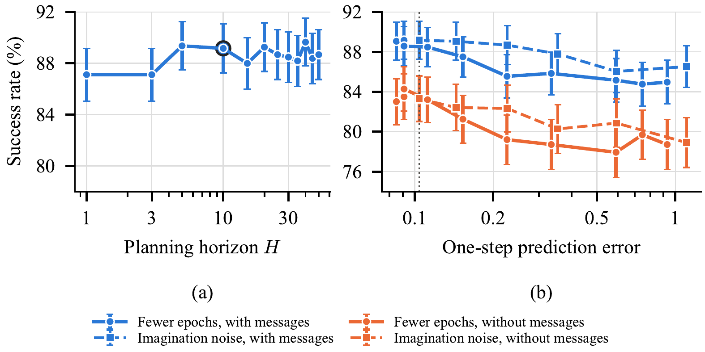
Citation
@article{elbakary2026c3wm,
title = {C3-WM: A Communication-Control Co-adaptive World Model for Networked Multi-Agent Systems},
author = {Elbakary, Ahmed and Weeraddana, Chathuranga and Bennis, Mehdi},
year = {2026}
}